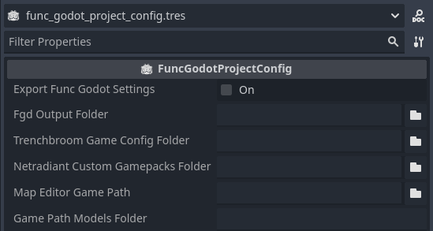

FuncGodotProjectConfig

Local machine project wide settings. Can define global defaults for some FuncGodot properties.
DO NOT CREATE A NEW RESOURCE!
This resource works by saving a configuration file to your game's user:// folder and pulling the properties from that config file rather than this resource. Use the premade addons/func_godot/project_config.tres instead.
| Property | Type | Description |
| Fgd Output Folder | String, Global Directory | Global directory path that FGD files save to when exported from their properties. Overridden when exported from a game configuration resource like TrenchBroomGameConfig. |
| Trenchbroom Game Config Folder | String, Global Directory | Global directory path where your TrenchBroom game configuration should be saved to. Consult the TrenchBroom Manual's Game Configuration documentation for more information. |
| Netradiant Custom Gamepacks Folder | String, Global Directory | Global directory path where your NetRadiant Custom gamepacks are saved. On Windows this is the gamepacks folder in your NetRadiant Custom installation. |
| Map Editor Game Path | String, Global Directory | Global directory path to your mapping folder where all of your mapping assets exist. This is usually either your project folder or a subfolder within it. |
| Game Path Models Folder | String | Relative directory path from your Map Editor Game Path to a subfolder containing any display models you might use for your map editor. Currently only used by TrenchBroom FGD Model Point Class. |